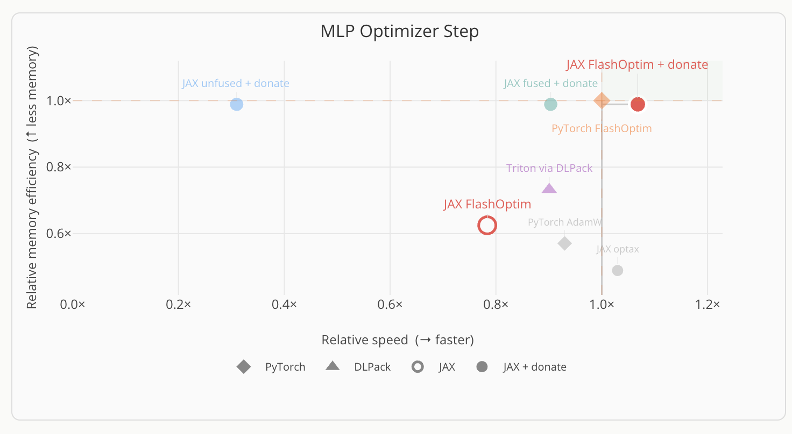
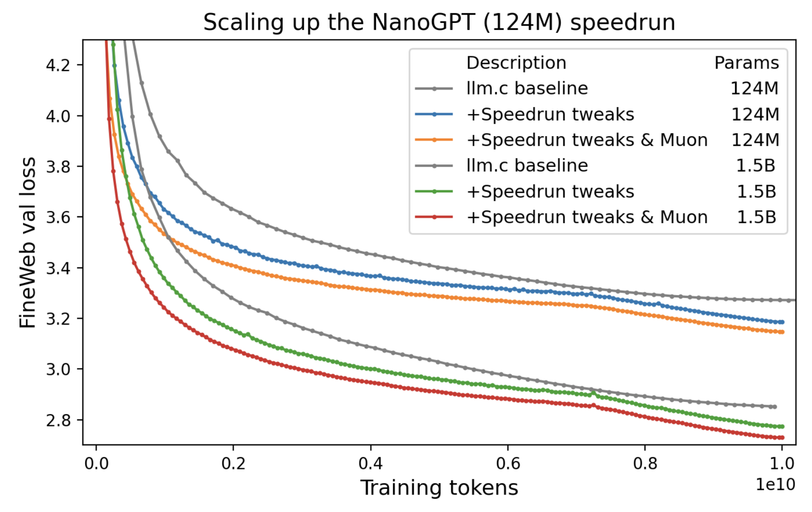
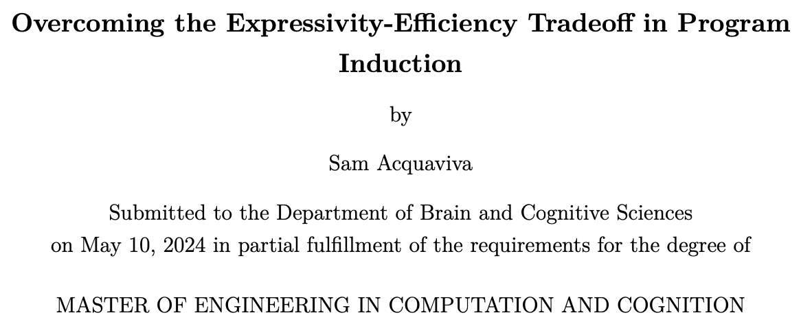
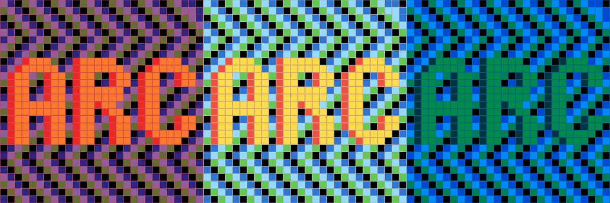

featured

flashoptim in jax
a jax-native implementation of flashoptim with fused pallas kernels and buffer donation, matching pytorch's memory and exceeding its speed.
2026
nanogpt speedrunning record
two nanogpt leaderboard submissions: a test-time training "notable run" and a triton-kernel record.
2026openai parameter golf record
a record submission (bpb=1.195) to openai's parameter golf using per-document lora test-time training.
2026
master's thesis
modeled domain-general human inductive reasoning through 2 routes: using strong bottom-up proposal models, and learning domain-specific languages on-the-fly.
2024
larc
2022 neurips paper presenting a natural language dataset for abstract reasoning collected via a large-scale, self-verifying pipeline, and verified using language-guided program synthesis.
2022acquacchi
play against a quarantine project: a chess engine written in c
2020all projects
2026
flashoptim in jax
A JAX-native reimplementation of FlashOptim, achieving the same memory compression and speed as the PyTorch original through fused Pallas kernels and buffer donation.
de bruijn tilings
Generating aperiodic rhombus tilings from grid intersections — Penrose tilings, higher-order generalizations, random grids, and n-cube projections.
OpenAI parameter golf record: LoRA TTT
A record submission (bpb=1.195) to OpenAI's Parameter Golf competition using sliding window evaluation and a novel per-document LoRA test-time training technique.
nanogpt speedrunning record: TTT and kernel improvements
I submitted two NanoGPT speedrun improvements: one 95.9s test-time-training run that was ultimately categorized as a notable run, and a later backward-transpose-kernel optimization that was accepted as an official record.
2025
induction and inquiry via probabilistic reasoning over language and code
Human inductive reasoning is best explained by sequential probabilistic reasoning over mental programs — a mix of natural language and source code. Our LLM-augmented Sequential Monte Carlo model captures garden-pathing, anchoring, and human-like active inquiry.
reasoning research @ stealth lab
in progress2024
master's thesis
People are incredibly flexible and efficient inductive reasoners. How can we model this ability computationally? In my thesis, I propose two hypotheses: people may operate over an incredibly vast language which is made tractable via a strong bottom-up proposal model, or people may learn task-specific languages to reason over.
2023
resource-rational task decomposition with theory of mind
Compositionality, the capacity to understand and generate complex ideas by combining simpler ones, is a critical attribute of human intelligence and plays a pivotal role in sophisticated problem-solving tasks.
hyperbolic vq-vaes
Combines vector-quantization with hyperbolic embedding space to train a Hyperbolic Vector-quantized Variational Autoencoder towards learning discrete hierarchical representation.
how to establish if young infants comprehend compositionality
Prior work has shown that 4-year-olds can use compositionality in visual tasks, but failed to show the same ability in younger infants. Designed a study to test this ability.
gabor-constrained neural networks for transfer learning
We explore whether constraining a machine vision system to be more human-like improves the performance of the system in learning new tasks.
2022
larc
LARC (Language-annotated Abstraction and Reasoning Corpus) is a dataset I collected with Yewen Pu and other post-doctorates in the MIT Computational Cognitive Sciences lab.
generative art: one a day
Art created using code. Varies from combining GANs and diffusion models with CLIP to generating simple flow fields.
2021
role of individual neurons in multi-modal models
Explored how individual neurons contribute to the final answer of large multimodal models, and how model explainability relates to performance.
inferring moral values via hierarchical bayesian modeling
Explored computationally inferring the moral values of different cultures using a hierarchical Bayesian model on The Moral Machine domain.
2020
acquacchi
A quarantine project to learn C. A strong chess engine written in C, ported to Javascript. It expands alpha-beta search with heuristics and bit-level manipulations.
kandula
API and app that enables anyone to create and customize stock-trading algorithms without code, just by tuning parameters.
lithium-oxygen battery redox mediators
We looked at using different solvent mixtures to tune the stability of inorganic redox mediators in Li-O2 batteries.